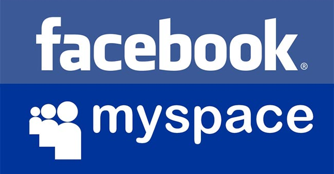

During the early have of the 2000’s is when things really got going. The entire framework that had been put down in the last 30 years spawned some of the most popular social media sites, such as Facebook and Myspace. This created the world of social media as we know it now.
Linkedin is a social media site started around the business environment. Founded by Ried Hoffman, Allen Blue, and Konstantin Guericke, Eric Ly, and Jean-Luc Vaillant, It was launched May 5th, 2003.It was designed for business professionals to share their occupation and backgrounds. Users can upload photos, create contacts, upload and share resumes. Employers can post jobs and view candidates, and Job Seekers can search for jobs. It currently has over 200 million users in over 200 different countries. It remains a popular social network in the professional world.
The perfect example of how ever-changing technology and its relevance is Myspace. It grew from seemingly nothing into what was a phenomenon. In its pre-facebook hay day Myspace added about 200,000 new users a day.It was the first wildly successful social networking site of its kind, and engaged all groups of people, young and old; people of all races all over the world flocked to make, change, update, friend, and add music to their myspace pages. From 2005 to 2006 the Myspace website grew from having 2 million profiles to an exponential 80 million profiles.
Facebook is a social media website created by Mark Zuckerberg on February 4th 2004. Facebook is a social media site which allows user to share profiles, status updates, photos, links, and videos with friends or public. It also allows users to search, add and chat with friends. Users can also create and like pages. It has applications such as games like Farmville. The website originally started as the website www.thefacebook.com and it was designed for the campus students at Harvard. It eventually expanded to other colleges such as Yale and Stanford. Just 6 days after going live Zuckerberg was accused by classmates for stealing ideas to create thefacebook.com. In 2005, Facebook bought the domain name facebook.com and opened the website to more college students. Eventually all college students, then anyone could create a Facebook page. Facebook has grown to become the largest and most popular social networking site today. It has become so popular that the United States president, President Barack Obama and Mitt Romney used it as a part of their 2012 presidential campaigns. Facebook currently has over 1 billion users worldwide and still counting.